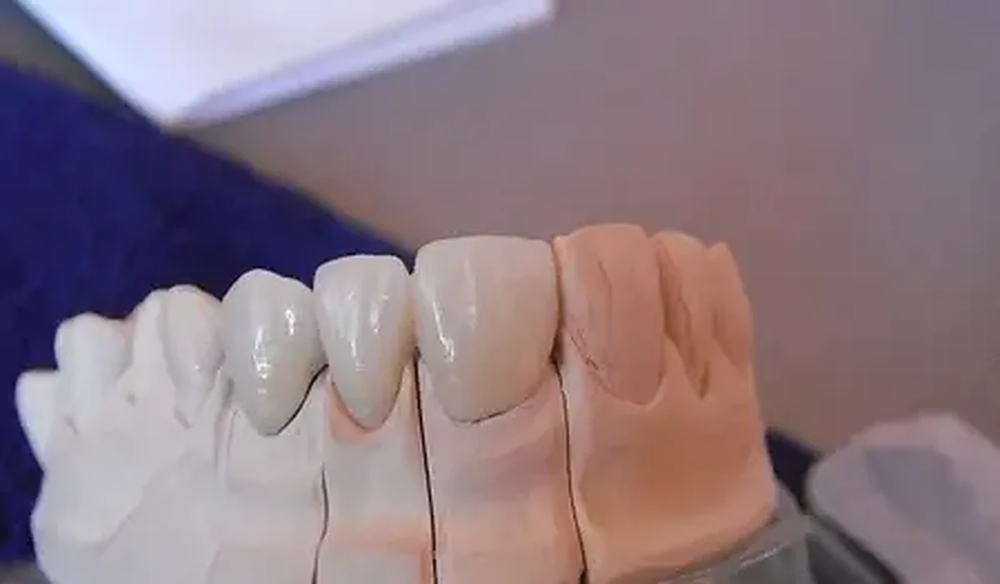

Scanare completa
Arcada de lucru trebuie sa contina informatia necesara pentru interpretarea preparatiei, zonelor proximale si anatomiei relevante.
Flux digital medic-laborator
Un ghid practic pentru medici si clinici: ce merita verificat inainte ca fisierele si instructiunile unui caz digital sa intre in fluxul tehnic CDL.

Inainte de upload
Laboratorul trebuie sa poata identifica fara presupuneri preparatia, limitele relevante, dintii vecini, antagonistul, relatia ocluzala si toate informatiile necesare restaurarii. Pentru implanturi, cazul trebuie corelat si cu sistemul si componentele protetice utilizate.
Arcada de lucru trebuie sa contina informatia necesara pentru interpretarea preparatiei, zonelor proximale si anatomiei relevante.
Setul digital trebuie evaluat ca ansamblu: arcada de lucru, antagonist si relatia dintre ele.
Tipul restaurarii, materialul, nuanta si particularitatile cazului trebuie comunicate separat de geometria STL.
Inainte de export, roteste modelul si verifica exact zonele care vor conta in proiectare.
O scanare foarte buna a arcadei de lucru nu compenseaza un antagonist incomplet sau o relatie ocluzala insuficienta.
Laboratorul nu trebuie sa deduca materialul sau tipul restaurarii exclusiv din forma preparatiei.
Scanarea unui scan body trebuie corelata cu sistemul protetic folosit. Compatibilitatea nu trebuie presupusa.
Fisierul STL descrie geometria, dar nu poate transmite singur toate informatiile estetice ale cazului.
Checklist CDL
Arcada de lucru, preparatia, marginile, vecinii si zonele proximale sunt complete.
Antagonistul si ocluzia sunt incluse si corespund informatiei clinice transmise.
Dintii, tipul restaurarii, materialul, nuanta si termenul sunt identificate fara ambiguitati.
Sistemul, platforma, scan body-ul si componenta protetica sunt comunicate atunci cand cazul le necesita.
Ce verifica laboratorul
In functie de caz, CDL poate verifica integritatea informatiilor digitale, coerenta fisierelor si elementele care necesita clarificare tehnica. Ghidul nu inlocuieste diagnosticul, indicatia sau deciziile terapeutice ale medicului.
Vezi si checklist-ul pentru fisiere STL si scanari intraorale →Caz digital